Exam Prep
How the AP exam works, how each essay is scored, how our eras line up with the AP units, and a one-page study guide for every era.
The AP U.S. History exam
New for 2026–27: everyone writes the same LEQ (no choice of prompts), so no era is safe to skip. SAQ 3 always uses a non-text source: an image, map, cartoon, or chart.
What’s New handoutHow the writing is scored
SAQ
3 pts eachOne point for each part (a, b, c). Use A·C·E every time:
DBQ
7 ptsLEQ
6 ptsOur 25 eras on the 9 AP Units
The exam is organized by AP Unit (Periods 1–9). We study it by era. Each column is one AP Unit; the boxes inside are the eras that cover its CED topics. A dashed box continues from the previous unit. Scroll sideways →
Era study guides
Each era’s one-page infographic. Open one and print it on 8.5 × 11.
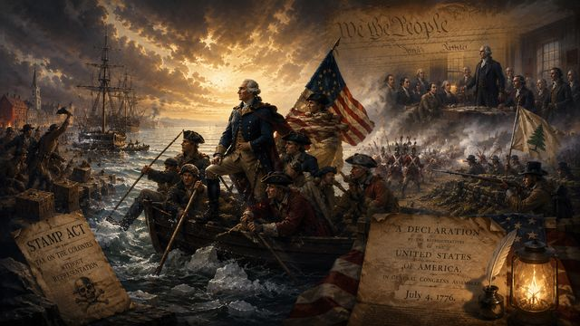
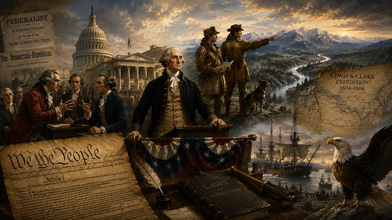
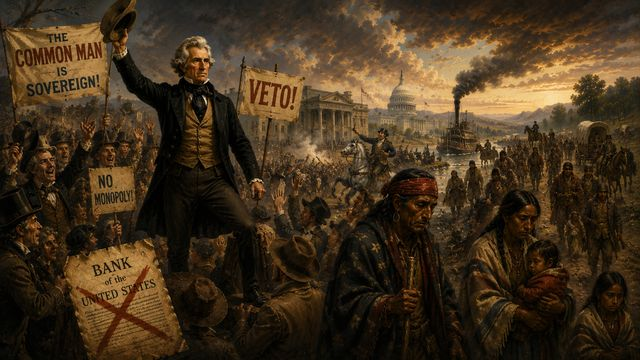
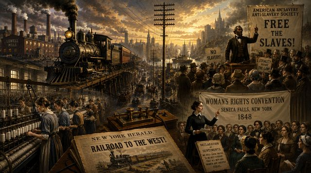
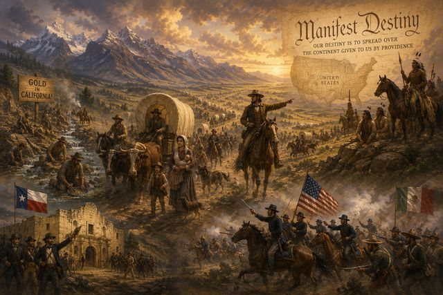
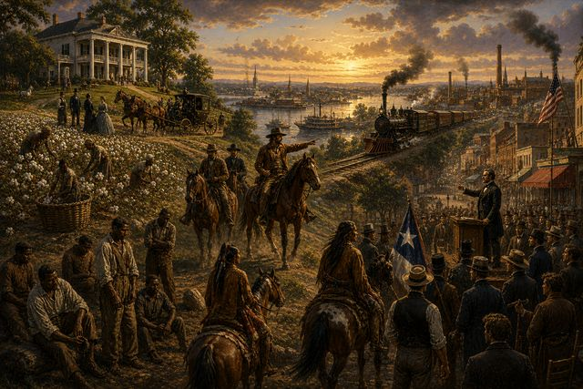
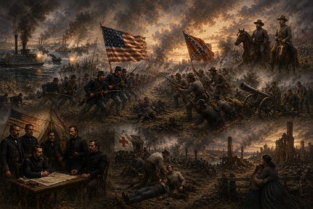
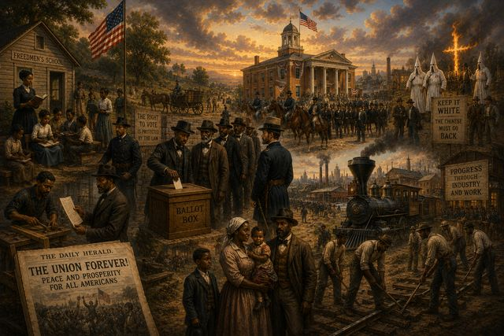
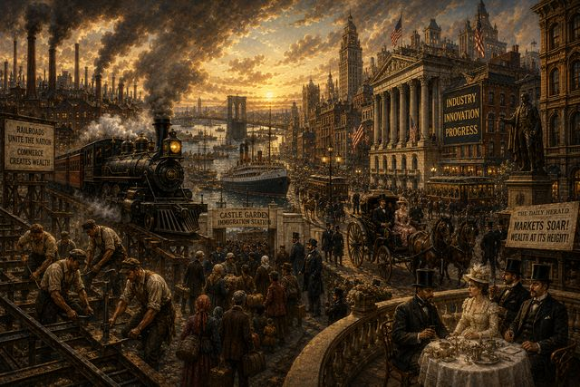
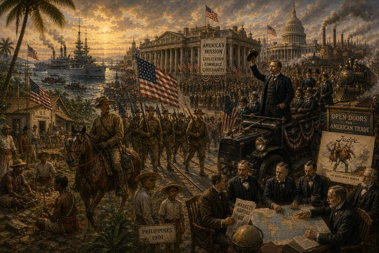
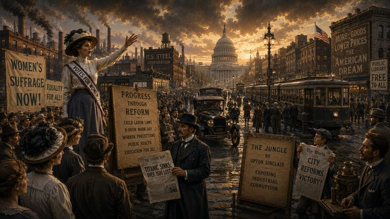
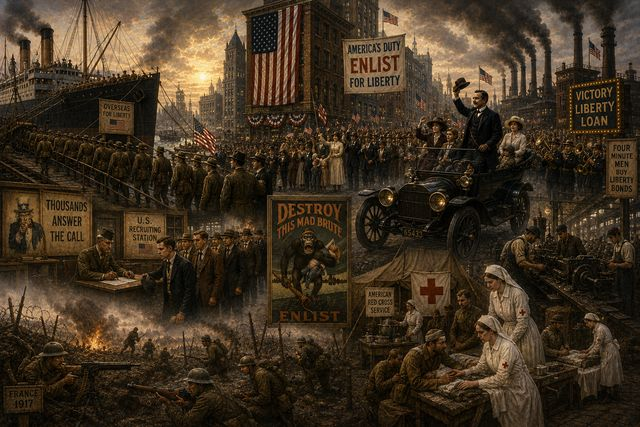
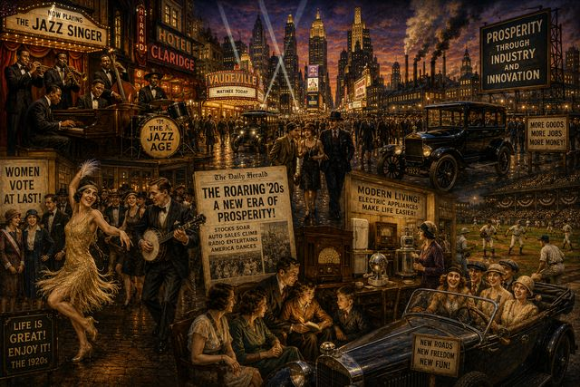
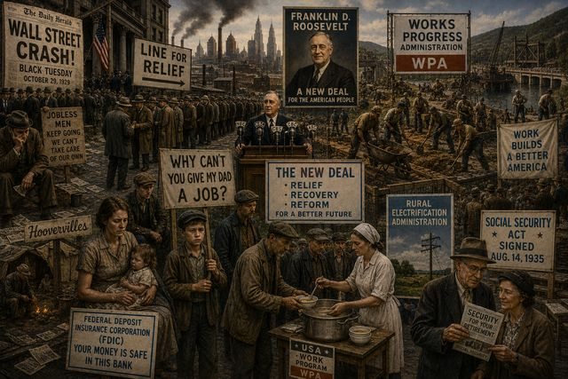
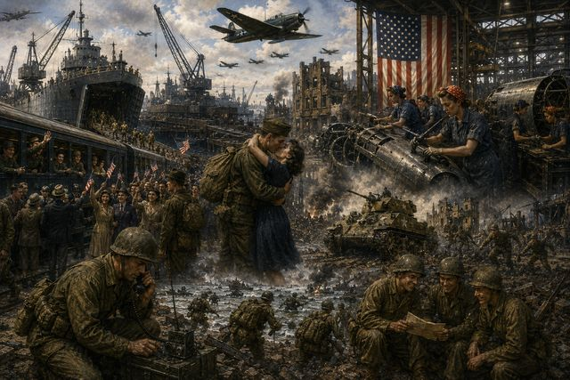
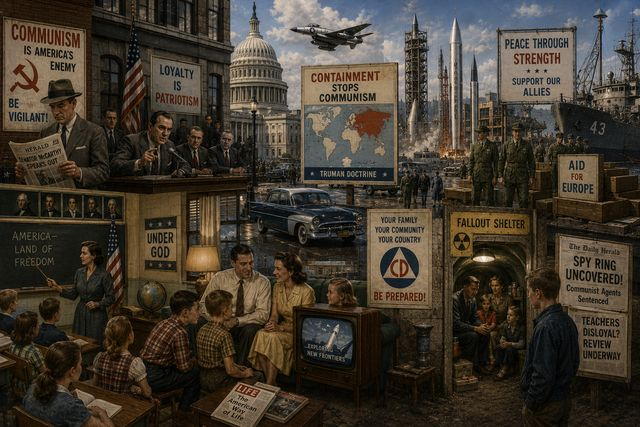
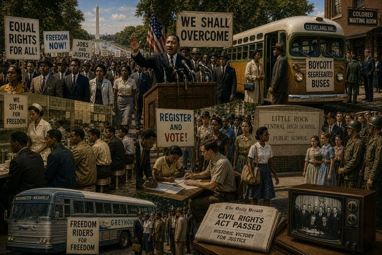